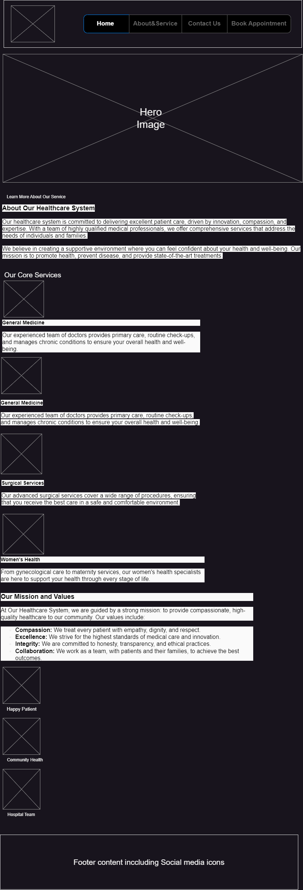
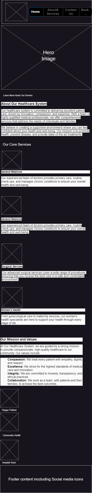

Site Name
Site Name: Our Healthcare System
This name reflects our commitment to providing comprehensive and quality healthcare services to our community.
Site Purpose
The purpose of this site is to inform visitors about our healthcare services, values, and mission. It serves as a platform for patients to learn about our offerings, book appointments, and access resources for their health and well-being.
Target Audience
The primary audience for our healthcare system website includes:
- Individuals seeking medical care or information about healthcare services.
- Families looking for pediatric and women's health services.
- Community members interested in health programs and preventive care.
Scenarios
Common questions from visitors include:
- What services are offered at Our Healthcare System?
- How can I book an appointment for a medical check-up?
- Where can I find information about patient testimonials?
Color Schema
We have selected the following colors for the website:
- Primary Color: #d92950 (used for headings and buttons)
- Secondary Color: #F1C40F (used for accents and highlights)
Typography
The typography for our site includes:
- Headings Font: 'Roboto', sans-serif (used for all headings)
- Body Font: 'Arial', sans-serif (used for normal text)
Wireframes
Below are the wireframe sketches representing the layout of the homepage for both desktop and mobile versions:
Desktop Wireframe
This wireframe shows the layout for the homepage on larger screens, including the header, hero section, service overview, and footer.
Mobile Wireframe
This wireframe shows the layout for the homepage on mobile devices, optimized for a smaller screen, featuring a collapsible menu and simplified structure.